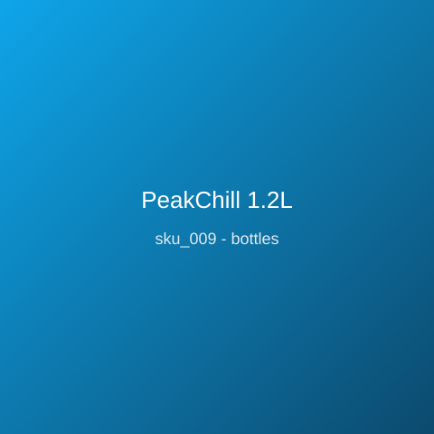

Price: ₹1,199
Wide-mouth 1.2L insulated jug with soft-grip handle pours cleanly and keeps water cold through long summer sessions and team practices. 18/8 stainless liner, powder-coat exterior, silicone-sealed leak-proof lid, 1.1kg; condensation-free double-wall build; dishwasher-safe lid; ideal for courtside, campsites, and construction sites alike.